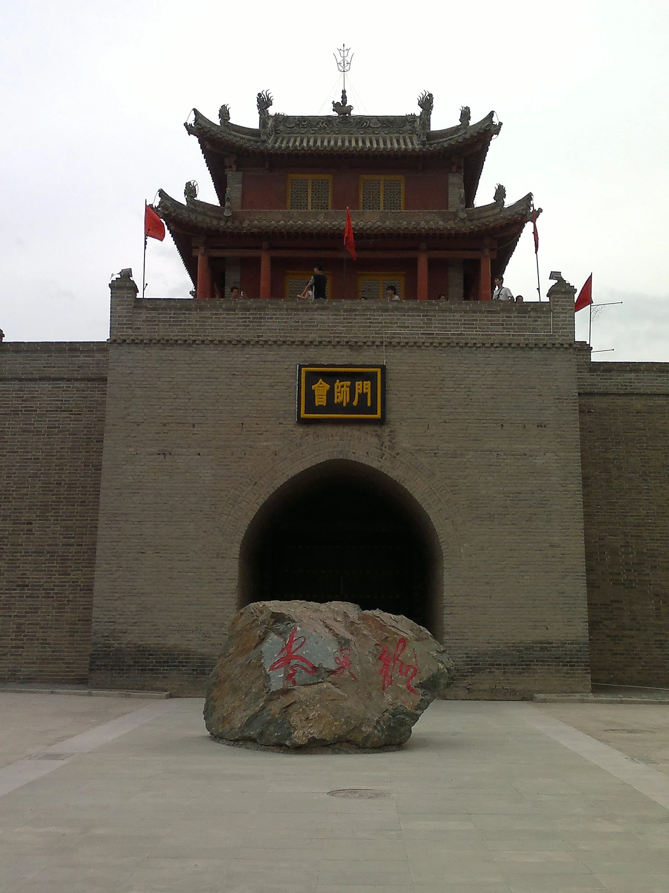
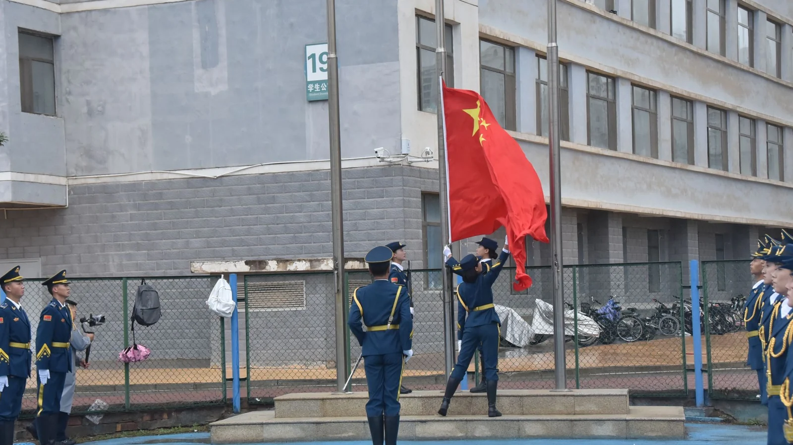

01 / 为什么出发
先把脚 放上路。
- 记录者
- 一名甘农青年
- 行走路线
- 南梁 — 会宁 — 兰州
- 记录方式
- 步行 / 查阅 / 手记
- 记录时间
- 2026 年秋
红色不是一种颜色，
而是一种选择：
在需要的时候，站到需要的地方。
以前我以为，红色历史是课本里的年份和地名。直到我真正站到会宁的城门下，才发现那些文字是有风声的。城墙不高，游客来来往往，可你抬头看见“会师门”三个字时，会突然意识到：很多年轻人曾经从这里走过，而且他们比今天的我还要年轻。
我没有亲历过战火，也不敢替历史下结论。我能做的，是把走过的地方、查到的资料、当时的感受记下来。于是有了这份“红途”：它不是一份标准答案，而是一个甘农学生用自己的脚步，对“我们从哪里来”的一次认真追问。
从南梁到会宁，再到兰州，地图上的线并不长。但每走一站，我都更明白一件事：所谓传承，不是把故事背下来，而是让故事在自己身上继续发生。
所以，我也把最后一站留给了今天的校园。因为红色基因最终要落到具体的人身上——落到我们怎样读书、怎样做事、怎样对待脚下的土地。
02 / 三处地标
沿着一条线，
读懂一片土地。
三处地点，三种时间。它们不是孤立的纪念地，而是一条仍在延伸的路：从星火，到会师，到黎明，再到今天。
南梁：
山沟里的星火
1934 年，以南梁为中心的陕甘边革命根据地逐步形成。它像一簇藏在黄土高原深处的火，后来成为长征的落脚点，也成为奔赴抗日前线的出发点。
进入行迹
1936.10会宁：
一场年轻的会师
1936 年 10 月，红军三大主力在会宁地区会师，长征胜利结束。城门下人来人往，我站了很久，想的是：他们当时也不知道，自己正站在历史里。
进入行迹兰州：
桥这头的清晨
1949 年 8 月 26 日，兰州解放。中山桥见证了一座城市的转折。七十多年后，桥下是散步的人、骑车的人和放学回家的孩子，这就是历史留给日常的答案。
进入行迹
03 / 今天的回答
把今天， 走成答案。
甘肃农业大学的前身，是 1946 年创建于兰州的国立兽医学院。1958 年，学校正式成立。八十年来，“臻进人类健康、裨益国民生计”的初心，和“敦品励学、笃志允能”的校训，一起落在一代代甘农人的田野实践里。
红色精神在这里有了另一种写法：不是停留在纪念日，而是走进课堂、实验室和田野，去回答“今天的青年，能做什么”。
我们把历史走了一遍，
是为了把今天走得更好。